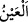
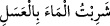

İşte bu âyet-i kerîmede de aynen kâfur örneğinde olduğu gibi “kor hâline” değil de
“kor gibi” şeklinde anlamak gerekiyor.
Kâfur, güzel koktuğu için ölülere ve kefenlere sürülen meşhûr kokunun adıdır. Kâfur
kelimesi “örtmek” anlamına gelen “küfür” kökünden türemedir. Çünkü kâfur eşyayı
güzel kokusuyla âdetâ örtmektedir.
Kamus’un beyânına göre kâfur bilinen bir kokunun adıdır. Hindistan dağlarında
yetişen bir ağaçtan elde edilir. Bu ağaç bir çok insanı gölgeleyecek derecede büyüktür.
Kaplanlar bu ağacı çok severler. Kâfur ağacının tahtası beyaz ve yumuşaktır. Reçine ve
zamk biçiminde olan kâfur kokusu ağacın içinde bulunur. Kâfur çeşit çeşittir ve rengi
kırmızıdır; ancak buharlaştırılmak sûretiyle beyazlaşır. Öte yandan kâfur, cennette bir
pınarın adıdır.
6. (Bu,) Allah’ın has kullarının içtikleri ve akıttıkça akıttıkları bir pınardır.
“Bu,” Kafur “Allah’ın” ebrâr “has kullarının içtikleri ve akıttıkça akıttıkları bir
pınardır.” Bir kaynaktır. “Kaynak” anlamına gelen “__WORD__ kelimesi yukarda geçen “kâfur”
kelimesinden bedel olup anlamı; “akan pınar” demektir. İçindeki suyun akıcı olmasından
dolayı su kaynağına da “__WORD__ denilir. Bu, su kaynağının biçim itibariyle akan suya
benzemesinden ve içinde suyun akıp gitmesinden dolayıdır.
Burada “Allah’ın kulları”ndan maksad, yukarda işâret olunduğu üzere müminlerin
ebrârıdır. “İbâdullâh” şeklinde Allah’ın ism-i azamına yapılan şereflendirme izâfeti,
daha çok müminlere hastır. Bir başka ifâdeyle Allah Teâlâ ism-i a’zamına müminleri
izâfe eder. Tıpkı kendi zamirine izâfe edip “ya ‘ıbâdî/ey benim kullarım” buyurduğu
gibi. Zira Allah Teâlâ’nın rablık/rubûbiyet hakkını en iyi o mümin kullar gözetirler.
Bunu gözetmeyen ise sanki O’nun kulu değildir.
Buraya kadar yaptığımız açıklamaya göre mânâ; “müminler, içerisine kâfur
karıştırılmış şarap içerler” demektir. Çünkü bu şarap kâfurla karıştırılmıştır. Bu ibâre
tıpkı; “
/içine bal karıştırılmış su içtim” ibâresi gibidir. “Kâfur
karıştırılmış şarap” ifâdesi, şarabın lezzetinin fazlalığının kinâye yoluyla anlatımıdır.
Buna göre âyet-i kerîmede işâret olunuyor ki; Allah’ın mukarreb gurubundan güçlü
kulları, içine hiç şarap katılmamış “halis kâfur içeceği” içeceklerdir. Âyetteki “yeşrebu
bihâ” ifâdesi -”ba” harf-i cerri “min” anlamına olduğundan- “yeşrebu minhâ” demektir.
Çünkü amil olan harf-i cerler birbirlerinin yerine kullanılabilirler. Nitekim âyette;
“bulutlardan suyu indirdik” demektir. (A’râf, 7/57). Şeyh el-Mekki Kutu’l-kulûb
isimli eserinde böyle söylemektedir.
“Akıttıkça akıtırlar…” Müfredât’ta belirtildiğine göre bu fiilin kökü olan “el-fecr”,
herhangi bir şeyi genişlemesine yarmak demektir. Buna göre âyetin mânâsı; “Müminler,
o kâfur pınarını istedikleri yere gâyet kolay bir şekilde akıtırlar. Pınar onlara karşı